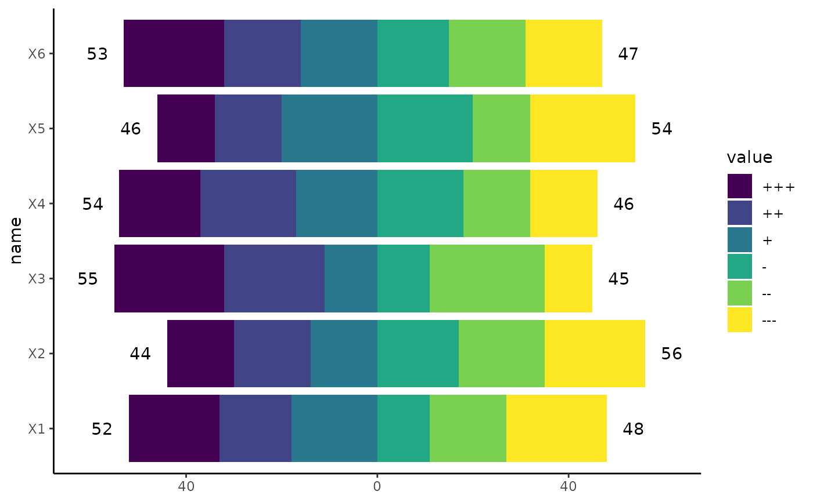
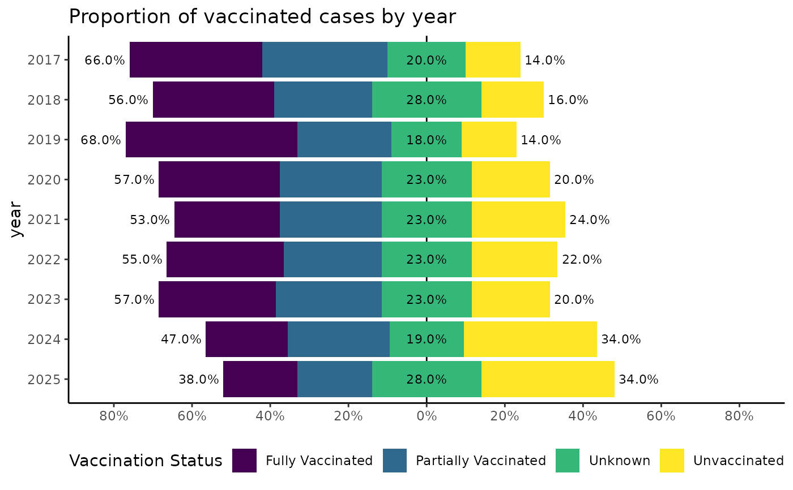

Create diverging bar charts, diverging area charts or other plots for opposing categorical data.
Source:R/geom_bar_diverging.R
geom_bar_diverging.Rdgeom_bar_diverging() creates a diverging bar chart, i.e. stacked bars which are centred at 0.
This is useful for visualizing contrasting categories like:
case counts by contrasting categories like vaccination status or autochthonous (local) vs imported infections
population pyramids
likert scales for e.g. agreement (sentiment analysis)
or any data with natural opposing groups.
stat_diverging() calculates the required statistics for diverging
charts and can be used with different geoms. Used for easy labelling of diverging charts.
geom_area_diverging() creates a diverging area chart, for continuous data of opposing categories.
x (or y) has to be continuous for this geom.
See scale_x_continuous_diverging(), scale_y_continuous_diverging() for the corresponding ggplot2 scales.
Usage
geom_bar_diverging(
mapping = NULL,
data = NULL,
position = "identity",
proportion = FALSE,
neutral_cat = c("odd", "never", "NA", "force"),
break_pos = NULL,
...,
na.rm = FALSE,
show.legend = NA,
inherit.aes = TRUE
)
geom_area_diverging(
mapping = NULL,
data = NULL,
position = "identity",
proportion = FALSE,
neutral_cat = c("odd", "never", "NA", "force"),
break_pos = NULL,
...,
na.rm = FALSE,
show.legend = NA,
inherit.aes = TRUE
)
stat_diverging(
mapping = NULL,
data = NULL,
geom = "text",
position = "identity",
stacked = TRUE,
proportion = FALSE,
neutral_cat = c("odd", "never", "NA", "force"),
break_pos = NULL,
totals_by_direction = FALSE,
nudge_label_outward = 0,
...,
na.rm = FALSE,
show.legend = NA,
inherit.aes = TRUE
)Arguments
- mapping
Set of aesthetic mappings created by
ggplot2::aes(). See the section Aesthetics below for more details.- data
The data to be displayed in this layer.
- position
Position adjustment.
- proportion
Logical. If
TRUE, each stacked bar are normalized to 100%. Useful to plot or calculate the percentages of each category within each bar.- neutral_cat
How to handle the middle category for a odd number of factor levels.
"odd": If the number of factor levels is odd, the middle category is treated as neutral."never": For odd factor levels, the middle categories is treated as positive."NA": observations withNAas category will be shown as the neutral category. By default the NA category will be in the middle (even number of levels) or the first category after the middle (odd number of levels)."force": A neutral category is always shown. By default this will be middle (odd number of levels) or the first category after the middle (even number of levels).
- break_pos
Only used for
neutral_cat = c("never", "NA", "force"). Either a integer position or the name of a factor level. Depending onneutral_cat:"never": The factor level at break_pos will be the first category in the positive direction."NA":break_poscontrols where the neutral NA category will be inserted.NAwill always be inserted before the before the specified factor level (therefore taking its position), i.e. 3 meansNAwill be the 3rd category."force":break_posforces the specified factor level to be neutral.
- ...
Other arguments passed on to
layer.- na.rm
If
FALSE, the default, missing values are removed with a warning. IfTRUE, missing values are silently removed.- show.legend
logical. Should this layer be included in the legends?
NA, the default, includes if any aesthetics are mapped.FALSEnever includes, andTRUEalways includes. It can also be a named logical vector to finely select the aesthetics to display.- inherit.aes
If
FALSE, overrides the default aesthetics, rather than combining with them. This is most useful for helper functions that define both data and aesthetics and shouldn't inherit behaviour from the default plot specification, e.g.borders().- geom
stat_diverging(): The geometric object to use to display the data, e.g."text"or"label".- stacked
Logical. If
TRUE, categories are stacked.- totals_by_direction
Logical. If
TRUE, totals are calculated by direction. I.e. the total for the positive, negative and, if existent, neutral category.- nudge_label_outward
Numeric. Relative value to nudge labels outward from
0. Try0.05. Negative values nudge inward.
Diverging bar charts
Diverging bar charts split categories into positive and negative directions based on factor level order. Categories in the first half of factor levels go in the negative direction, while categories in the second half go in the positive direction.
Aesthetics
Required aesthetics:
xorydiverging_groups: Will default tofillif missing. A factor should be used for this aesthetic for best results. All factor levels defined will be used to determine positive, negative and neutral categories. Behaviour of the diverging bar charts can therefore be controlled by creating empty dummy factor levels.
Optional aesthetics:
weight: Adjust the weight of observations. Can be used to pass case counts or incidences.
Calculated stats
The following calculated stats can be used further in aes:
after_stat(count)after_stat(prop): Proportion of the category within the stacked bar.after_stat(sign): Direction of the category. Either-1,0or+1
Examples
# Basic example with geom_bar_diverging
library(ggplot2)
library(dplyr)
#>
#> Attaching package: ‘dplyr’
#> The following objects are masked from ‘package:stats’:
#>
#> filter, lag
#> The following objects are masked from ‘package:base’:
#>
#> intersect, setdiff, setequal, union
library(tidyr)
set.seed(123)
df_6cat <- data.frame(matrix(sample(1:6, 600, replace = TRUE), ncol = 6)) |>
mutate_all(~ ordered(., labels = c("+++", "++", "+", "-", "--", "---"))) |>
pivot_longer(cols = everything())
ggplot(df_6cat, aes(y = name, fill = value)) +
geom_bar_diverging() + # Bars
stat_diverging() + # Labels
scale_x_continuous_diverging() + # Scale
theme_classic()
ggplot(df_6cat, aes(y = name, fill = value)) +
geom_bar_diverging() + # Bars
stat_diverging(totals_by_direction = TRUE, nudge_label_outward = 0.05) + # Totals as Label
scale_x_continuous_diverging() + # Scale
theme_classic()

# Population pyramid
population_german_states |>
filter(state %in% c("Berlin", "Mecklenburg-Vorpommern"), age < 90) |>
ggplot(aes(y = age, fill = sex, weight = n)) +
geom_bar_diverging(width = 1) +
geom_vline(xintercept = 0) +
scale_x_continuous_diverging(n.breaks = 10) +
facet_wrap(~state, scales = "free_x") +
theme_bw()
# Vaccination status: set neutral category
set.seed(456)
cases_vacc <- data.frame(year = 2017:2025) |>
rowwise() |>
mutate(vacc = list(sample(1:4, 100, prob = (4:1)^(1 - 0.2 * (year - 2017)), replace = TRUE))) |>
unnest(vacc) |>
mutate(
year = as.factor(year),
"Vaccination Status" = ordered(vacc,
labels = c("Fully Vaccinated", "Partially Vaccinated", "Unknown", "Unvaccinated")
)
)
ggplot(cases_vacc, aes(y = year, fill = `Vaccination Status`)) +
geom_vline(xintercept = 0) +
geom_bar_diverging(proportion = TRUE, neutral_cat = "force", break_pos = "Unknown") +
stat_diverging(
size = 3, proportion = TRUE, neutral_cat = "force", break_pos = "Unknown",
totals_by_direction = TRUE, nudge_label_outward = 0.05
) +
scale_x_continuous_diverging(labels = scales::label_percent(), n.breaks = 10) +
scale_y_discrete_reverse() +
ggtitle("Proportion of vaccinated cases by year") +
theme_classic() +
theme_mod_legend_bottom()
